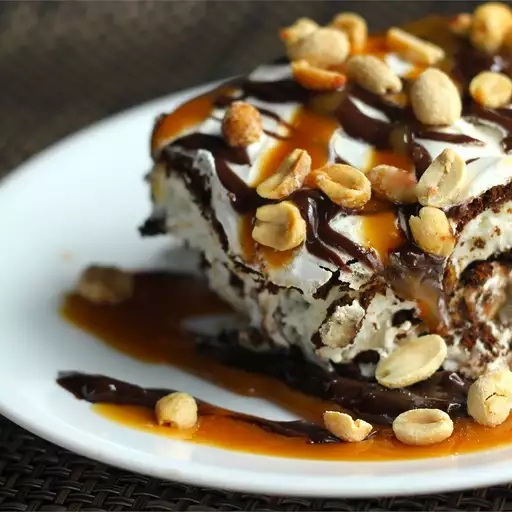

Ice Cream Sandwich Cake
Everyone knows there's nothing better than ice cream on a hot summer's day. So, as summer heats up, you'll want to cool down with this delicious ice cream treat.
Description
This five-ingredient ice cream cake is super easy to prep by using store-bought ice cream sandwiches, whipped topping, hot fudge, caramel ice cream topping, and pecans.
Ingredients
- 24 vanilla ice cream sandwiches, unwrapped
- 2 (8 ounce) containers whipped topping (such as Cool Whip®), thawed
- 1 (12 ounce) jar hot fudge ice cream topping, warmed
- 1 (12 ounce) jar caramel ice cream topping
- ¼ cup chopped pecans, or to taste
Steps
- Gather the ingredients.
- Arrange a layer of ice cream sandwiches in the bottom of a 9x13-inch dish; top with a layer of whipped topping, hot fudge topping, and caramel topping.
- Repeat layering with remaining ice cream sandwiches, whipped topping, hot fudge topping, and caramel topping, ending with a top layer of whipped topping. Sprinkle with pecans.
- Cover the dish with aluminum foil and freeze until set, about 30 minutes. Slice and serve with your favorite toppings!